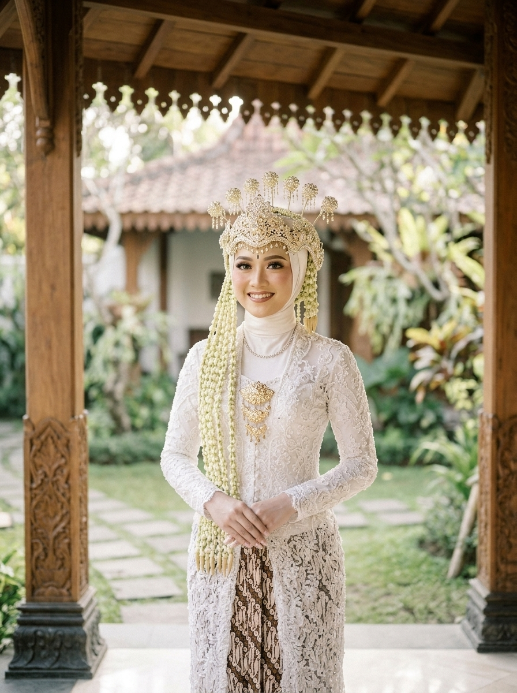

The Wedding of
Habib & Adiba
28 . 12 . 2026 — Kediri, Jawa Timur


00
Hari
00
Jam
00
Menit
00
Detik
Assalamu’alaikum Wr. Wb.
Dengan memohon rahmat serta ridho Allah Subhanahu Wa Ta’ala, perkenankan kami merangkai ikatan suci pernikahan putra-putri kami dalam kesucian adat Jawa:
“Dan di antara tanda-tanda (kebesaran)-Nya ialah Dia menciptakan pasangan-pasangan untukmu dari jenismu sendiri, agar kamu cenderung dan merasa tenteram kepadanya, dan Dia menjadikan di antaramu rasa kasih dan sayang.” — QS. Ar-Rum : 21 —
Mempelai Berbahagia
Putra & Putri Terbaik

Wanci & Panggenan
Rangkaian Pawiwahan
08.00
WIB
Prosesi Ijab Qabul
Akad Nikah
Kediaman Mempelai Wanita
Ds Pagu, Wates, Kediri, Jawa Timur
10.00
WIB – Selesai
Panggih & Pahargyan
Resepsi Pernikahan
Kediaman Mempelai Wanita
Ds Pagu, Wates, Kediri, Jawa Timur
Live Streaming Virtual
Saksikan prosesi sakral pernikahan adat Jawa kami secara daring bagi kerabat yang berhalangan hadir langsung.
Gabung Siaran Langsung
Lampah Tresna
Untaian Kisah Kami
-
I
 15 Mei 2024
15 Mei 2024Awal Pertemuan
Berawal dari perjumpaan sederhana di bangku perkuliahan, percakapan hangat tentang cita-cita dan keluarga menumbuhkan rasa saling menghargai yang tulus.
-
II
 24 Agustus 2026
24 Agustus 2026Khitbah & Peningset
Dengan restu kedua orang tua dan keluarga besar, kami mengikat janji keseriusan dalam prosesi lamaran adat penuh khidmat untuk melangkah menuju ibadah terpanjang.
-
III
 28 Desember 2026
28 Desember 2026Pawiwahan Suci
InsyaAllah pada hari yang penuh berkah ini kami menyempurnakan separuh agama dalam ikatan suci pernikahan berbalut kesucian Batik Putih Keraton.
Potret Kebahagiaan
Galeri Momen
Tali Asih
Amplop & Tanda Kasih
Doa restu Anda merupakan karunia terindah bagi kami. Namun apabila memberi adalah ungkapan tanda kasih, Anda dapat menyalurkannya melalui:

Nomor Rekening BCA
12345678
a.n. Habib Yulianto
Alamat Pengiriman Kado
- Penerima
- Habib Yulianto
- No. Telepon
- 1234567890
- Alamat
- Ds Pagu, Kec. Wates, Kab. Kediri, Jawa Timur
Buku Tamu & Konfirmasi
Doa & Restu
0
InsyaAllah Hadir
0
Berhalangan